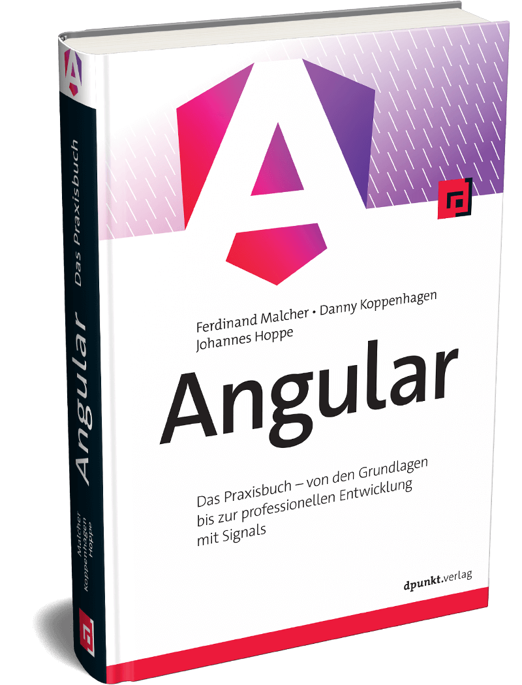

BookManager 1
Auf dieser Seite findest du alle Ressourcen rund um das Beispielprojekt BookManager aus dem Angular-Buch. Neben einer Live-Demo kannst du die Änderungen am Quellcode mit unserer Differenzansicht nachvollziehen.
Alle Infos zum Buch findest du auf unserer Website: angular-buch.com
Alle Zwischenstände
Hier findest du eine Übersicht aller Entwicklungsstufen des BookManager-Projekts. Jede Stufe zeigt die schrittweisen Änderungen im Code, sodass du die Entwicklung der Anwendung nachvollziehen kannst. Außerdem findest du hier den Quellcode und eine Live-Demo der einzelnen Entwicklungsstufen.
-
Erste Schritte mit Komponenten und Signals: Wir bauen die Buchliste als Komponente auf und nutzen Property Bindings, um Daten an das Template zu übergeben.
-
Wir zerlegen die Anwendung in mehrere Komponenten und übergeben Daten von einer Eltern- an eine Kindkomponente per Input.
-
Mit Outputs reichen wir Events aus Kindkomponenten an die Eltern weiter. So entsteht eine Favoritenliste, die per Klick befüllt wird.
-
Mit Services entkoppeln wir die Businesslogik von den Komponenten. Wir verwenden Dependency Injection, um den Service in unsere Komponenten einzubinden.
-
Mit einem reaktiven Datenfluss aus Signals und Computed Signals filtern wir die Buchliste lokal nach einem Suchbegriff.
-
Wir lernen den Angular-Router kennen und navigieren zwischen mehreren Seiten der Anwendung.
-
Per Component Input Binding lesen wir Routenparameter direkt als Inputs in der Zielkomponente aus.
-
Statt Beispieldaten greifen wir nun per HttpClient auf eine echte Web-API zu und verarbeiten die Antworten in der Anwendung.
-
Die Resource API verbindet HTTP-Anfragen mit Signals. Wir nutzen sie, um Daten asynchron abzurufen und Zustände wie Laden oder Fehler reaktiv abzubilden.
-
Mit Pipes formatieren wir Datumsangaben direkt im Template. Außerdem schreiben wir eine eigene Pipe zur Formatierung der ISBN.
-
Mit dem neuen Ansatz Signal Forms erfassen wir Buchdaten über ein Formular und binden die Werte reaktiv an Signals.
-
Über ein Schema definieren wir Validierungsregeln für unsere Signal Forms und zeigen verständliche Fehlermeldungen an.
-
Wir verlagern die Suche vom Client auf den Server und übergeben den Suchbegriff als Parameter an die HTTP-Schnittstelle.
-
Mit Lazy Loading teilen wir die Anwendung in mehrere Bundles auf, die zur Laufzeit nachgeladen werden. Das verkürzt die initiale Ladezeit.
-
Mit RxJS, Observables und Operatoren bauen wir eine Typeahead-Suche, die Eingaben entkoppelt verarbeitet und unnötige HTTP-Anfragen vermeidet.
BookManager API
Als zentrale Datenquelle dient uns die BookManager API. Wir stellen eine gehostete Instanz der HTTP-Schnittstelle bereit:
BookManager 1 Styles
Der BookManager verwendet vorbereitete Stylesheets. Den Quelltext stellen wir hier bereit:
Achtung: Hinweis zur 1. Auflage (2026)
Dies ist das Beispielprojekt BookManager für das Angular-Buch der 1. Auflage (2026). In den vorherigen Auflagen hieß das Beispielprojekt BookMonkey. Falls du eine ältere Auflage des Buchs besitzt, findest du den Beispielcode in folgenden Repositorys:
Fehler gefunden oder Fragen?
Du hast einen Fehler entdeckt oder hast Fragen und Anregungen zum Buch?
Bitte schreibe uns:
team@angular-buch.com